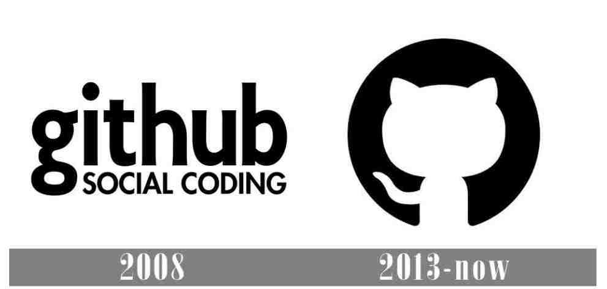

Gallery
History of the GitHub logo
Since 2008, the GitHub brand has only had two logo versions, both presented in a simple yet appealing monochromatic color scheme. These versions feature a clean and elegant black logo on a white background. It's a quite succinct history of the company's visual identity.
1. GitHub Logo: 2008-2013
In 2008, GitHub unveiled its first logo, which featured rigid, perspective, and elegant lowercase letters in black, along with a motto in uppercase. The main emblem had an attractive narrow sans-serif font with bold lines and an intriguing letter "G" with an oval tail. As for the slogan, the phrase "Social Coding" used a simple font with regular curves and outlines to convey a sense of seriousness and timelessness.
2. GitHub: 2013 - Now
The GitHub logo underwent a significant update in 2013 while retaining the same monochromatic color scheme. The new design featured a more concise font without serifs for the black wordmark, consisting of the two letters "G" and "H," both in uppercase. Although the graphic emblem became an integral part of GitHub's visual identity, the slogan was removed from the official version and is now displayed alongside or without the logo.
The logo, which quickly gained widespread recognition, consisted of a solid black circle with the figure of a white cat on it. The logo's mascot, known as Octocat, has a bent tail directed to the left.
To use it as their emblem-mascot, the founders had already acquired the image of an octopus with a cat's head from its creator, graphic designer Simon Oxley. The character was initially named Octopus but was later rebranded as Octocat by GitHub, who also registered the mascot.